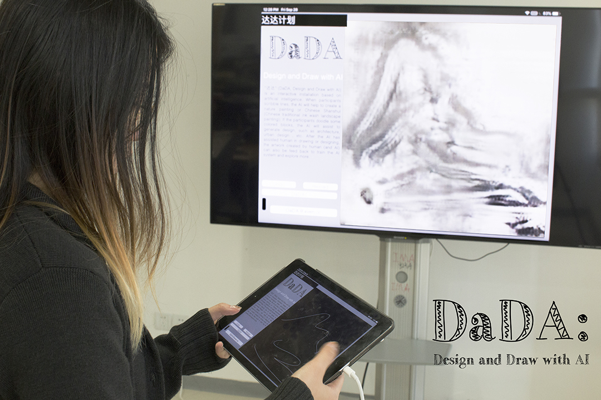

DaDA: Design and Draw with AI
September 2018

"DaDA" is an ambitious individual research and practice plan. It will be a series of interactive, generative projects explores the possible role of artificial intelligence in (traditionally human-oriented) creative processes -- such as drawing and design. A cooperative relationship between human and AI in this interactive progress is expected. Human creator not only trains AI with artificial data but also benefits from the assistance of AI. On the other side, artificial intelligence not only learns from human-created data but also "teaches" and provides human creator new approaches to expected or unexpected creative goals.
Projects Intro
01. Shanshui-DaDA
As the first attempt, "DaDA" plan starts with Shanshui painting -- a Chinese traditional painting art form. Shanshui literally means "mountain and water", also known as literati painting, it's is an East Asian type of brush painting of Chinese origin that uses ink and involves natural landscape. "DaDA" is trained with "CycleGAN" published as Unpaired Image-to-Image Translation using Cycle-Consistent Adversarial Networks on 108 Shanshui paintings collected from online open data. And it's wrapped with a web-based interface, where participants can sketch on and later see the real-time generated paintings. If the participant sketches the landscape in his/her imagination with lines on the front interface, the "DaDA" will assistant to create a Chinese Shanshui painting and present in the display. Here is a demo video recorded when "DaDA" is first presented in public:
Shanshui-DaDA(First Demo with Participants):
Hand-sketch vs. Generated Shanshui painting:

More can be found here
02. Archi-DaDA
The second "DaDA" project is an architecture design project.